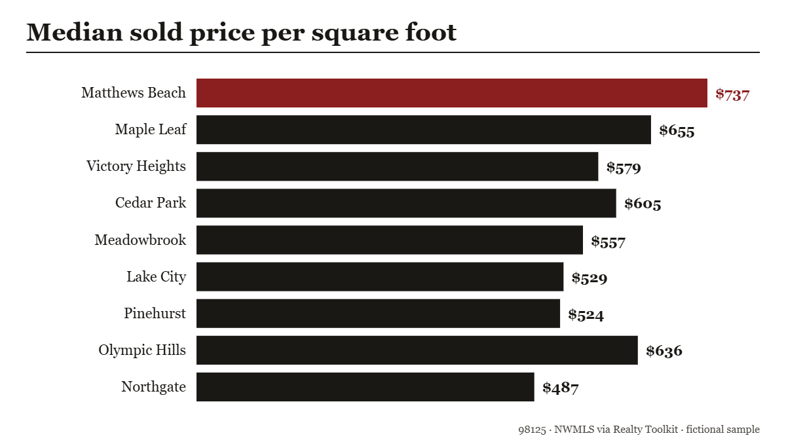
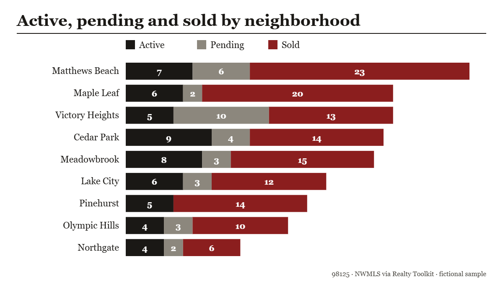
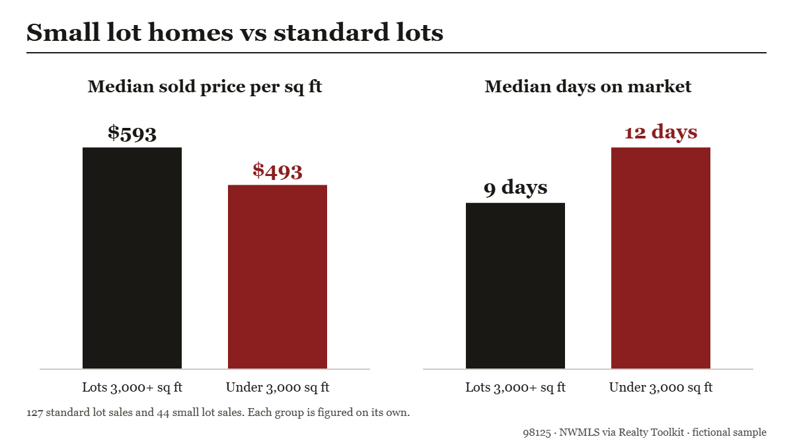

Matthews Beach Leads at $737 a Square Foot
127 sales, 9 median days on market and 54 active listings across 9 neighborhoods in the last 90 days.
98125 closed 127 home sales in the last 90 days at a median $593 per square foot, with homes selling in a median 9 days on market. Among neighborhoods with at least six sales, Matthews Beach led on price at $737 per square foot, while Northgate came in at $487. That gap is the first thing a seller should price against.

Fig. 1: Median sold price per square foot by neighborhood, last 90 days. Matthews Beach highlighted. Gray bars have fewer than 6 sales and are not ranked.
.png)
Fig. 2: Median days on market for sold homes by neighborhood, last 90 days. Northgate highlighted as slowest among ranked neighborhoods.
Supply tells the next chapter. 98125 has 54 active listings and 33 pending, or about one pending for every 2 active homes. Victory Heights carries the busiest pipeline with 10 pending and 5 active. Northgate is the outlier on time, with sold homes taking a median 31 days against 9 for the ZIP.

Fig. 3: Active, pending and sold homes by neighborhood. Sold counts are for the last 90 days; active and pending are current.
For sellers, price to the neighborhood rather than the ZIP: Matthews Beach and Northgate sit $250 per square foot apart, and buyers notice. With pending demand this strong, a well prepared home can expect a short run.
For buyers, Northgate is where patience still earns room to negotiate, while Meadowbrook rewards a clean offer ready on day one.
Matthews Beach: 23 sold, 7 active, 6 pending; $737 per sq ft sold, 5 days on market.
Maple Leaf: 20 sold, 6 active, 2 pending; $655 per sq ft sold, 15 days on market.
Victory Heights: 13 sold, 5 active, 10 pending; $579 per sq ft sold, 12 days on market.
Cedar Park: 14 sold, 9 active, 4 pending; $605 per sq ft sold, 14 days on market.
Meadowbrook: 15 sold, 8 active, 3 pending; $557 per sq ft sold, 5 days on market.
Lake City: 12 sold, 6 active, 3 pending; $529 per sq ft sold, 12 days on market.
Pinehurst: 14 sold, 5 active, 0 pending; $524 per sq ft sold, 21 days on market.
Olympic Hills: 10 sold, 4 active, 3 pending; $636 per sq ft sold, 9 days on market.
Northgate: 6 sold, 4 active, 2 pending; $487 per sq ft sold, 31 days on market.
98125 Total: 127 sold, 54 active, 33 pending; $593 per sq ft sold, 9 days on market.
Small lot homes, on lots under 3,000 square feet, are counted on their own so they do not move the neighborhood medians. Of these, 44 sold in the last 90 days at a median $493 per square foot and $705,000, against $593 and $1,335,000 on standard lots. They took a median 12 days on market, with 28 active and 9 pending now.

Homes sold: 127 on lots 3,000+ sq ft; 44 on lots under 3,000 sq ft.
Median sold price: $1,335,000 on lots 3,000+ sq ft; $705,000 on lots under 3,000 sq ft.
Average sold price: $1,324,992 on lots 3,000+ sq ft; $716,614 on lots under 3,000 sq ft.
Median $/sq ft: $593 on lots 3,000+ sq ft; $493 on lots under 3,000 sq ft.
Average $/sq ft: $607 on lots 3,000+ sq ft; $501 on lots under 3,000 sq ft.
Median home size: 2,226 sq ft on lots 3,000+ sq ft; 1,442 sq ft on lots under 3,000 sq ft.
Median days on market: 9 on lots 3,000+ sq ft; 12 on lots under 3,000 sq ft.
Active: 54 on lots 3,000+ sq ft; 28 on lots under 3,000 sq ft.
Pending: 33 on lots 3,000+ sq ft; 9 on lots under 3,000 sq ft.
Lake City: 11 sold, 18 active, 2 pending; $469 per sq ft sold.
Pinehurst: 12 sold, 2 active, 0 pending; $488 per sq ft sold.
Northgate: 7 sold, 2 active, 2 pending; $467 per sq ft sold.
Meadowbrook: 8 sold, 2 active, 1 pending; $567 per sq ft sold.
Victory Heights: 2 sold, 4 active, 3 pending; $500 per sq ft sold.
Cedar Park: 2 sold, 0 active, 0 pending; $568 per sq ft sold.
Maple Leaf: 2 sold, 0 active, 0 pending; $584 per sq ft sold.
Olympic Hills: 0 sold, 0 active, 1 pending.
The 98125 market is not behaving as one uniform market. Neighborhood-level pricing, market time and buyer activity show meaningful differences, while small lot homes represent a separate segment that should be evaluated independently from homes on standard lots.